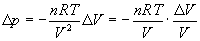
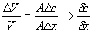

Härledning av sanband mellan tryck och förskjutning
Vi kan utgå från allmänna gaslagen pV=nRT och differentiera den:
där den första faktorn är en materialberoende konstant (antal mol gas per volym) som vi väljer att kalla K (kompressionsmodul). För mera teori om denna hänvisas till litteratur i termodynamik.
Om vi nu tänker oss ljudutbredning i ett rör med tvärsnittsytan A och betraktar en liten delsträcka Dx av detta så kommer delen att få volymen ADx. När ljud passerar kommer framkant och bakkant av delsträckan att röra sig olika mycket.- Skillnaden är skillnaden i förskjutning, Ds. Den relativa volymsändringen kan alltså skrivas 
Därmed är påståendet bevisat.